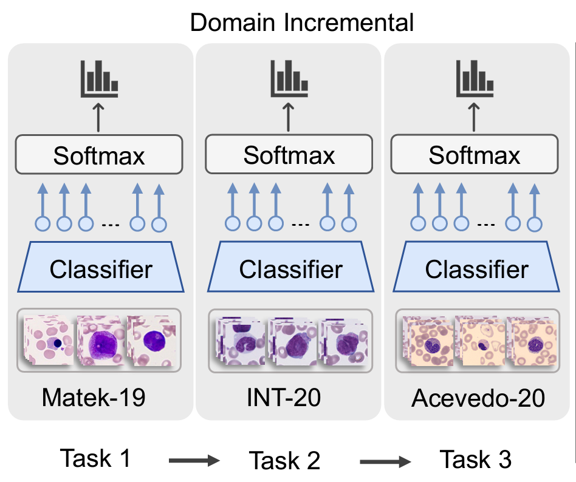

Selected publicationsFor the complete list please visit my Google Scholar profile. |
|
|
Neural Cellular Automata for Lightweight, Robust and Explainable Classification of White Blood Cell Images
Michael Deutges*,
Ario Sadafi*,
Nassir Navab,
Carsten Marr
Medical Image Computing and Computer Assisted Intervention (MICCAI), 2024
|
|
|
Built to last? Reproducibility and Reusability of Deep Learning Algorithms in Computational Pathology
Sophia Wagner,
Christian Matek,
Sayedali Shetab Boushehri,
Melanie Boxberg,
Lorenz Lamm,
Ario Sadafi,
Dominik Winter,
Carsten Marr,
Tingying Peng.
Modern Pathology 37, 2024
|
|

|
A Continual Learning Approach for Cross-Domain White Blood Cell Classification
Ario Sadafi*, Raheleh Salehi*, Armin Gruber, Sayedali Shetab Boushehri, Pascal Giehr, Nassir Navab, Carsten Marr
DART workshop at Medical Image Computing and Computer Assisted Intervention (MICCAI), 2023
Best Paper Award
|
|
|
RedTell: an AI tool for interpretable analysis of red blood cell morphology
Ario Sadafi*,
Maria Bordukova*,
Asya Makhro,
Nassir Navab,
Anna Bogdanovda,
Carsten Marr
Frontiers in Physiology 14, 2023
|
|
|
Pixel-Level Explanation of Multiple Instance Learning Models in Biomedical Single Cell Images
Ario Sadafi*,
Oleksandra Adonkina*,
Ashkan Khakzar,
Peter Lienemann,
Matthias Hehr,
Daniel Rueckert,
Nassir Navab,
Carsten Marr
Information Processing in Medical Imaging (IPMI) 2023
|
|
|
Explainable AI Identifies Diagnostic Cells of Genetic AML Subtypes
Matthias Hehr, Ario Sadafi, Christian Matek, Peter Lienemann, Christian Pohlkamp, Torsten Haferlach, Karsten Spiekermann, Carsten Marr
PLOS Digital Health, 2023
|
|
|
Unsupervised Cross-Domain Feature Extraction for Single Blood Cell Image Classification
Raheleh Salehi*, Ario Sadafi*, Armin Gruber, Peter Lienemann, Nassir Navab, Shadi Albarqouni, Carsten Marr
Medical Image Computing and Computer Assisted Intervention (MICCAI), 2022
|
|
|
Attention based Multiple Instance Learning for Classification of Blood Cell Disorders
Ario Sadafi, Asya Makhro, Anna Bogdanova, Nassir Navab, Tingying Peng, Shadi Albarqouni, Carsten Marr
Medical Image Computing and Computer Assisted Intervention (MICCAI), 2020
|
|
|
Multiclass Deep Active Learning for Detecting Red Blood Cell Subtypes in Brightfield Microscopy
Ario Sadafi, Niklas Koehler, Asya Makhro, Anna Bogdanova, Nassir Navab, Carsten Marr, Tingying Peng
Medical Image Computing and Computer Assisted Intervention (MICCAI), 2019
|